Melon's North America Trip - Page 1
Melon's North America Trip - Page 1
Melon's North America Trip - Page 1
Melon's North America Trip - Page 1


Melon arrives in Vancover for a few days then goes to Anaheim and Disnyland!
So possibly the best flight Iv ever been on! A small plane direct from Dublin, almost empty, had a whole row to myself and even a PLUG :O Wondrous indeed, 10 hours of DOS games and Yes Man. We passed over a place with bazillions of lakes about 2 hours before landing.
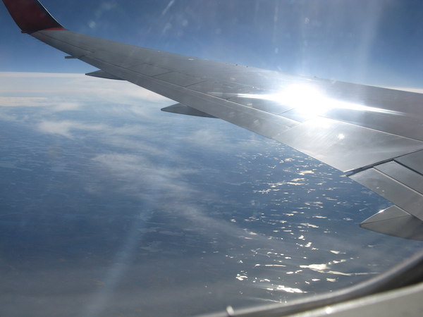On arrival there was the usual rush of scary customs, bus drivers shouting at people to tell them it was their stop, and a ridicules number of types of milk to choose at the shop. I mean really I had to ask someone to help me find regular milk.. But behold! In the middle of a strange land filled with weird plastic paper money and jars of pasta sauce that are too big and made by companies Iv never heard of, they had my one true biscuit, McVities Ginger Nuts :D Canada clearly respects tea time. Home 4000 miles from home (Also some of the weird plastic money)
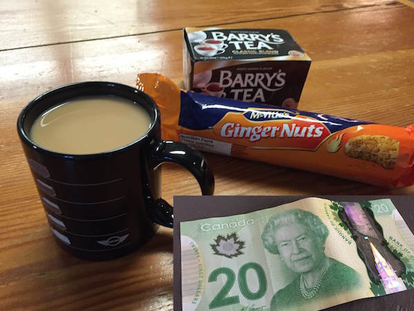I was pretty exhausted though and by 5pm really wanted to go to bed, so I forced myself on a rather sad walk along the beach, there were logs everywhere which brings up the fact Iv noticed Canada has a serious log obsession, they stick logs absolutely everywhere, by the sea, in the airport, under bridges, everywhere! Anyway heres my sad walk at about 7pm, after that I was out cold.
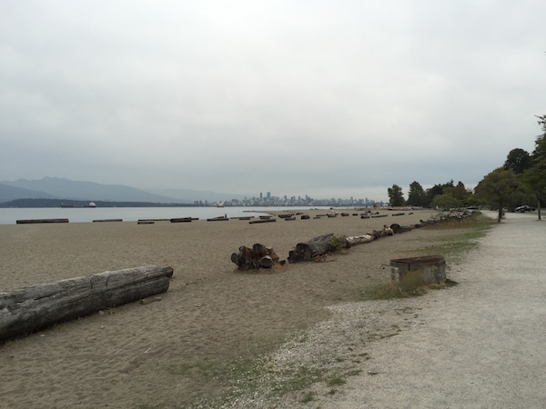
Have you ever tried eating breakfast surrounded by youths in shorts? Its unpleasant, and there seems to be a positive epidemic of it here.. Anyway it rained all morning till about 1pm.
I ended up heading to the Museum of Anthropology on the University of British Colombia campus. Entry should have been $20, however a nice man who looked like George Takei gave me his entry badge and university alumni band while I was waiting in line so I got in free :D
This box apparently used to contain the sun and a raven would let it out of the box every morning.
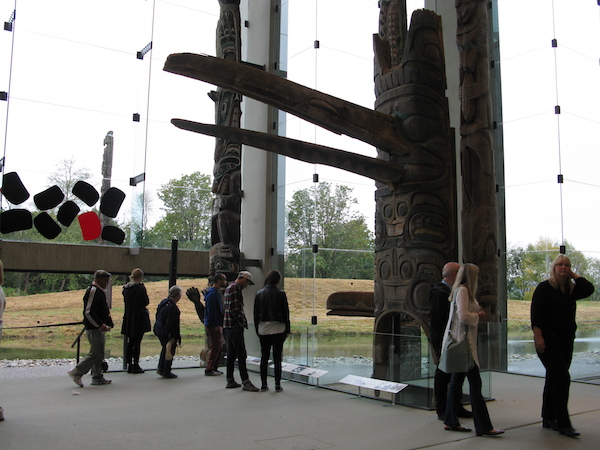 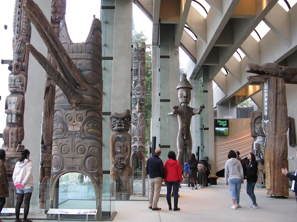I liked this bird fellow, most of the totems were from about 1830 to 1910, they were divided based on the diffrent styles the tribes used. There was allot more to the museum with many other world cultures, but this one the most interesting section.
After that I decided to review the beach again as the kitchen was full of giggling americans making bird noises and the bunk room needed some air. Look at that golden sunshine!
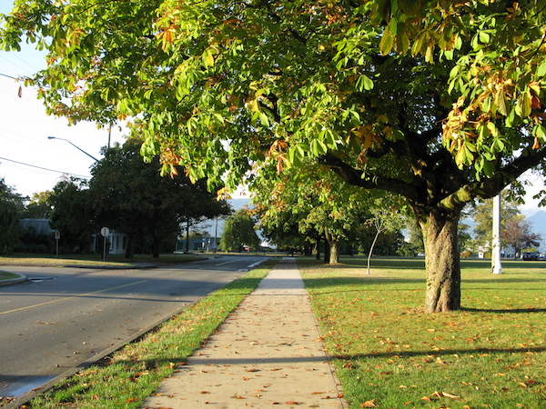 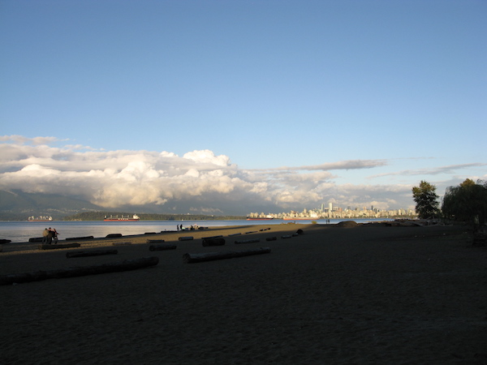The beach looked allot less sad today.
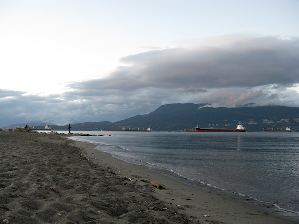 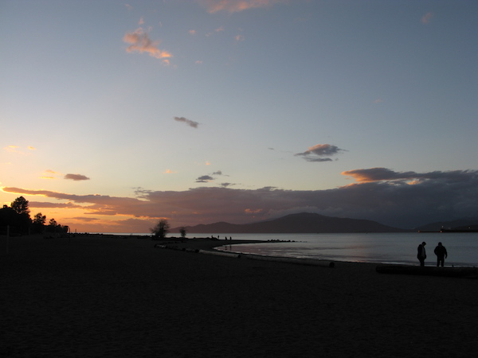The hostel out in the suburbs was shutting down for renovation so I set off for an inner city hostel to take its place. A vastly noticeable difference, this one is filled with cool booky types in black cloths sitting with fancy fish based food and reading books im probably not grown up enough to understand. There are a few short panted youths from the other hostel too but here they look uncomfortable and out of place, which is really how you should look if you wear shorts.
For most of the day I took it easy and sat in the cafe/kitchen type thing, there was a moody fellow with sandals with Australian flags on them in the bunk room, the sandals had seen better days. Played a pretty good Pokemon ripoff game for iPhone for a while but I began to feel a bit isolated and home sick, so I made my way to Hokkaido Ramen Santouka, a ramen place that had good reviews.
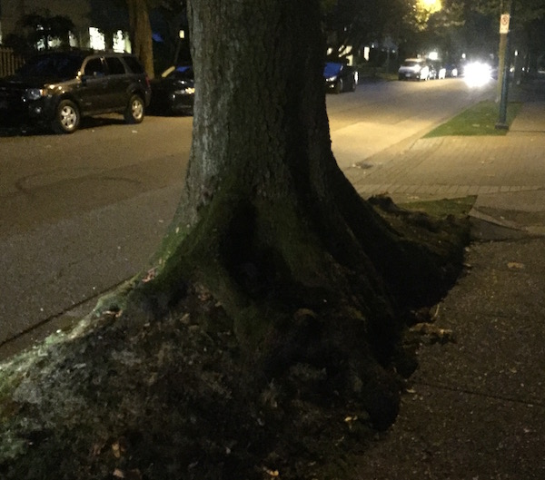You probably cant really tell from the picture but look at these crazy roots, the street trees were like fantasy woodland trees. Also there's a jump, suddenly you'll be on a leafy residential street and then the next will be a busy shop street, and they dont seem to merge or mix.
Anyway, Omg that was a good ramen, there was a line out the door but it was pretty quick. I was put at the end of a table with a bunch of Japanese students and they all made me look like an absolute goon with their ramen eating skills, later replaced by what I think was a Chinese family on holiday, they all had coats in primary colours with that barrel stuffing. It was pretty packed though, I finally learned the trick to not splash noodles, you have to hunch over the bowl like there is someones head 15 cm from you.. because.. well.. there is.. It was so perfect though, walking down the street after I caught myself looking around for a late night manga shop to buy some comics I coud not read.
The showers in this hostel actually have doors too, spoiled indeed. Though what is it with America and putting 30 cm gaps under bathroom doors, like.. have they ever heard of privacy? I went looking for maple syrup in a shopping center too but I didn't look very hard. After a golden sunny day its now raining, which is nice and cool.. like an icy drink after a ramen...
The morning was marked with the kitchen radio being tuned to Seattle radio playing non stop motown and classic hits. I asked a german if he minded me turning off the TV and he decided to have breakfast with me. He talked about living with a tribe in the jungle and playing the didgeridoo in sushi restaurants, though he seemed a little lost. The thing people forget is you dont find yourself when your traveling, you loose yourself, and when people travel too much, they loose too much.
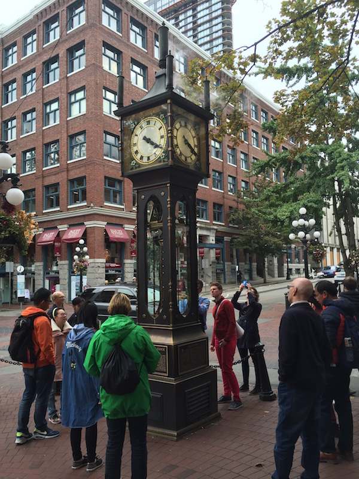I finally made it to the steam clock whos sister I saw in Otaru. There was a homeless man in a wheelchair I chatted with for a while, he wanted to go to England to see the recording studio where the Beatles worked, he also sang and had a pretty good signing voice. I gave him my bus fare and walked home instead.
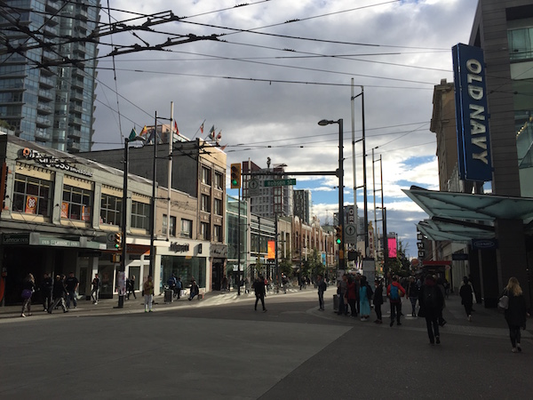Its an interesting place to walk through, everyone seems to naturally walk on the right side of the pavement which is the oppisit to the side I walk on. The streets have really piratey names "Dead Mans Island, Davie St, Lost Lagoon, Coal Harbour, Gastown". Also if you try and cross the road, all the cars stop, like even if you're 5 meters away from the road and walking towards it, all the cars will stop, its really annoying if your used to cork car dodging.
Oh LFZ released a new track today its really good! Also also I finally worked out why we have 240v instead of 110v, 110 is absolutely useless fo boiling kettles it takes ages.
Anyway in the evening I took it easy and headed for another ramen. Between the outer inner city which my hostel is located in and the Korea/Japanese distract that the ramen shops hide in is a posh leafy suburb where everyone is hip and people walk their dogs with neon light up collars.
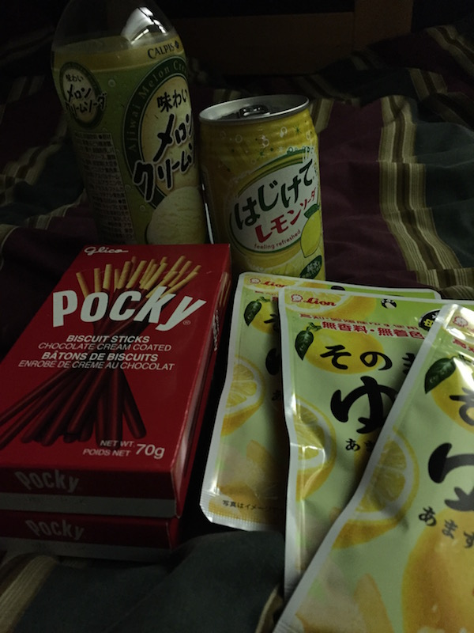On the way home I passed a Japanese import convenience store. I finally was able to get more of those lemon rind sweets I got in January :D Back at the bunk room I got to talking with someone across from me and it turned out they were from japan and were heading back there after a year learning english. Am I possibly on the wrong side of the Pacific..
Anyway, Iv gotta be up at 5am to catch the flight to LA so time for my GRAND CANADA SUMMERY. Its a weird place ok. It does not seem to have any particularly unique culture, but instead borrows from many. The best way I can describe it is like if the US was copyrighted and you needed a slightly altered US to put in a TV show, a kind of generic western society. Maybe Iv missed something, and Im sure someone can give me plenty of examples of uniquely Canadian things, but thats what I saw in Vancouver.
If your ever in a hostel, just remember the universal hostel question "Where are you from?" Everyone has an answer and just about any conversation can come from it.. and only a small amount of the time will someone grunt and give you a weird look 😛
So at 5:30 am I rushed out the door without breakfast, had an interesting walk through downtown Vancouver at 6, which turns out to be a very safe city really. Then I stood on the train with my bags and for some reason everyone else with bags decided the other side was better... Who cares! I had my melon ice cream soda. The ushual learch through security airports and flights, the difference was very evident at the bording gate, the people going to LA did not look so happy.
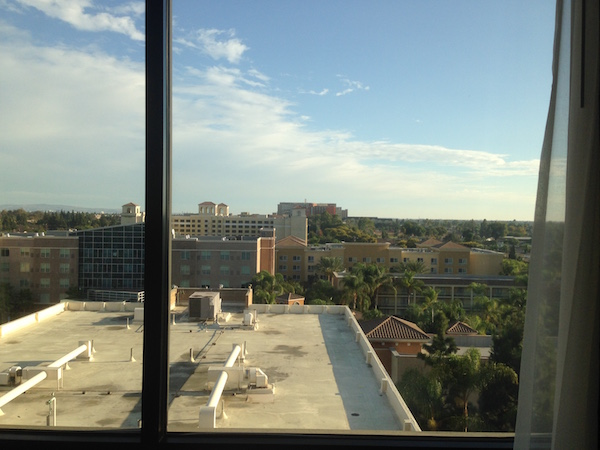So Anaheim... Yeh theres nothing here.. We walked around for a good 40 mins.. theres nothing here.. Like you can go to Disney land I guess, thats it though.. the streets are dead and lifeless, no grass grows, one shop that charges $10 for a bottle of sunscreen, a few theme restaurants with fairly tasteless food (They did give me a free lightup cup though that I defiantly wanted..)
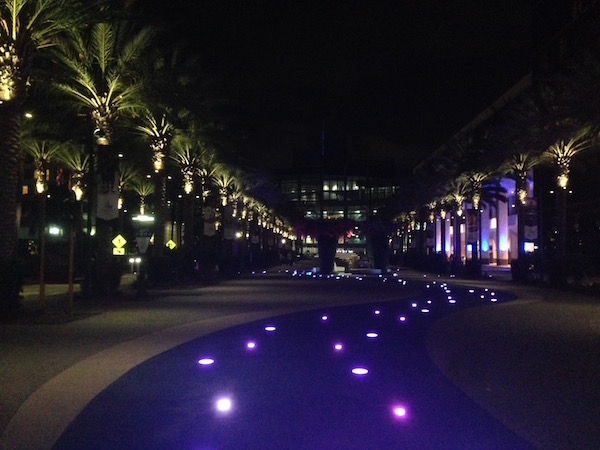Oh yeh I met toxicsheep and rsl here, they are basically exactly as they are online, its kinda funny. Sheep has already found himself a girl, rsl has not spoken much but is sitting while I write this and sheep chats with god knows what, so seems like a nice fellow.
Anyway, just about all you can do here it Pokemon GO so we walked around allot doing that and saw a few other people doing the same, actually the only people here walking at all are playing pokemon.. Its a bit like a bad dream, but Ill give it a few days to actually see some things before I make a final call, at least its nice and warm.
So we had the bright idea to not spend $14 each for a stale looking buffet breakfast and walked to go find someplace else.. Oh that was a bad idea.. about an hour later we ended up at a seedy little sandwich place that was under an 8 lane bypass. Anyway, after that we decided never to walk anywhere again and got an Uber back, Uber turned out to be pretty great and we spent the rest of the day at disneyland. I forgot my full camera so excuse the picture quality, but if you really need good pictures of this place im sure you dont need me to take them :P
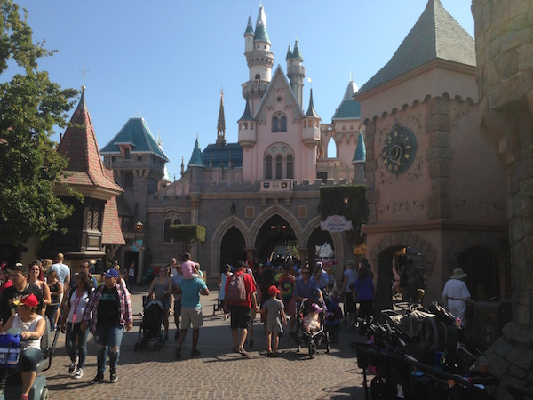 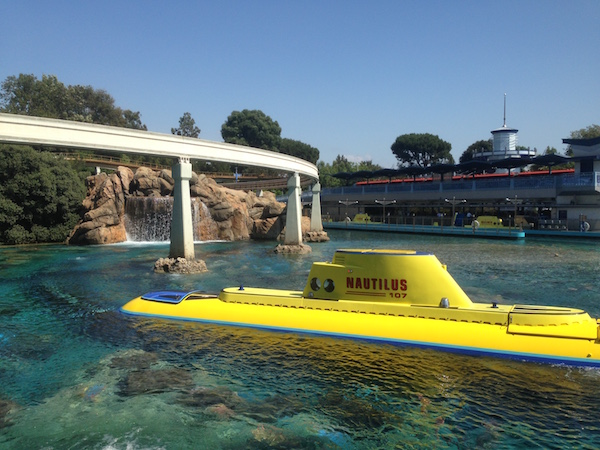 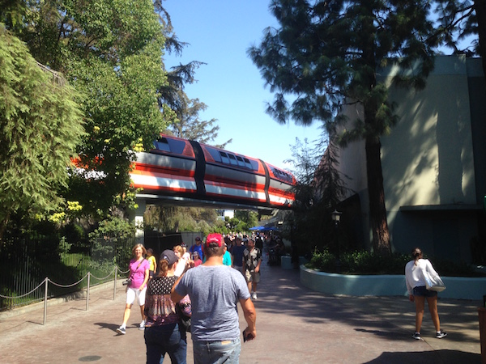
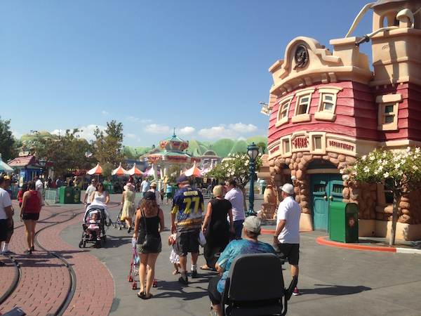
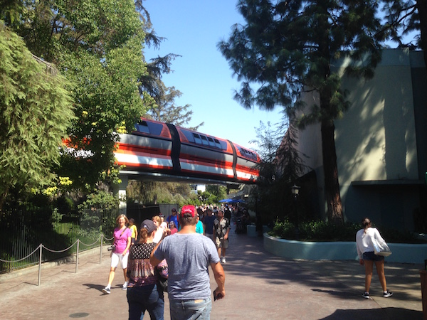
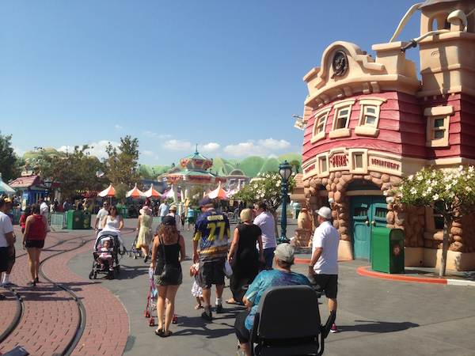
It was super hot for the first few hours and even with sun screen I now look like Rudolph. Anyway, disneyland is super weird, its like.. 70s futurism and totally over blown miniture german fairytale towns mixed together and put on crack. Except instead of Bavarian food or French food, everyone just eats pizzas, burgers and fried checken.
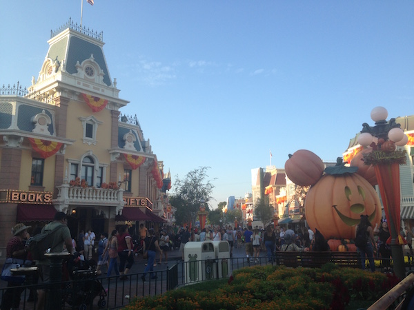 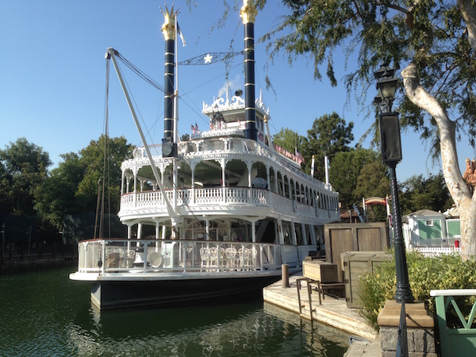 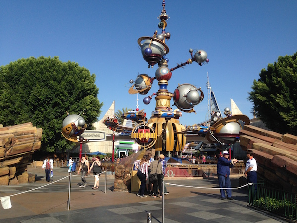The other two did not seem particularly interested and spent most of their time playing pokemon go, I loved it too much though, I wanted to stay till closing and had to be dragged away :( In the evening it was chill, you could sit on a bench, bands wold march past playing the frozen theme, and there were all these lights and popcorn stands and stuff going on, it was really nice ok! The closest thing I can relate it to is Akihabara in Tokyo, which is I guess a similar meca for fandom. The food was rely bad though, thats my one complaint.
Oh we had this awesome uber driver who was like agent k. He was listening to country western music and had a proper american accent and talked about going to the Disneyland opening in 1955 as a kid and how his family saved all they money to go to it and he got his picture with Walt, and got a job driving trams in its old parking lot which is now the adventure California resort. But now he never goes there and is disappointed by the way the area had become such as mess of shops and hotels and bad road design and thats not what Walt would have wanted! "I dont think Walt knew what was going to happen here".
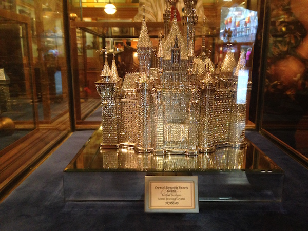 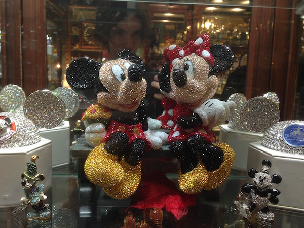Look at this $37,000 jewel encrusted disney castle! Or they had an $8000 paper elsa statue. Very tasteful :P
Anyway, heres a horrifying picture of me burning in the sun next to that famous walt disney statue, enjoy.
So yeh, I dont have much of an entry for this day, we went back to Disney downtown shopping street and went to a few shops, I did a make your own lego mini figure thing. Then we headed to try ride the mono rail, but apparently you need a valid Disney land ticket to ride it :/ After that we took a trip to South Coast Mall, the largest on the west coast.. it was.. a big mall. And yeh, some food, not much else to say for the day.
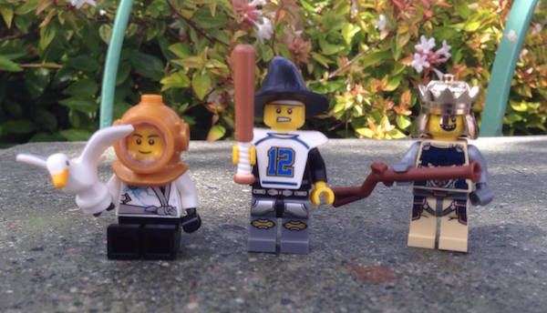Ill parafrase, we got up, went in, packed bags for hours, had lunch, packed more bags, finished around 3:30, chatted with people for a few hours, or by chatted I mean I sat there and listened while everyone else chatted :P Anyway after that I got wrangled into a team lader meeting for ages.. Im pretty tired now so Ill go over my opinions of stuff more tomorrow, stay tuned! Oh and we got Italian at this super authentic place where like the whole family came out to check on us and the dad collected the bill so the daughter could not steal the tip xD Then in the uber on the way back our driver was a stand up comedian who did like a mini show for us the whole way home.. not sure I needed it fully at the end of a long day but he sure put in effort!